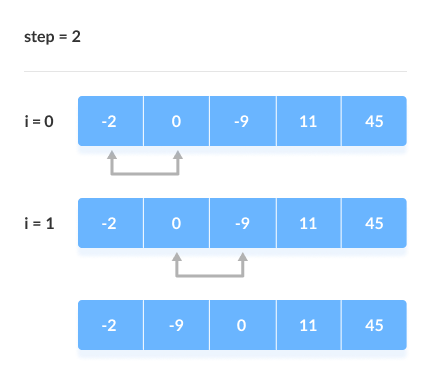

Bubble Sort Algorithm
Tianchen Guan
CS 400
11.HTML Activity
- Bubble sort is a sorting algorithm that compares two adjacent elements and swaps them until they are in the intended order.
- It is named because this algorithm is just like the movement of air bubbles in the water that rise up to the surface, such element of the array move to the end in each iteration. Therefore, it is called a bubble sort.
Working of Bubble Sort
First Iteration (Compare and Swap)
- Starting from the first index, compare the first and the second elements.
- If the first element is greater than the second element, they are swapped.
- Now, compare the second and the third elements. Swap them if they are not in order.
- The above process goes on until the last element.

Remaining Iteration
- The same process goes on for the remaing iterations.
- After each iteration, the largest element among the unsorted elements is placed at the end.

- In each iteration, the comparison takes place up to the last unsorted element.

- The array is sorted when all the unsorted elements are placed at their correct positions.

Here is a link to the Bubble Sort Algorithm: Bubble Sort